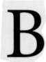

 y now you should realize that the foundation of horary interpretation is the twelve houses of the horoscope. Planets assume importance primarily as rulers of the mundane houses and as significators of the querent and quesited. Planets also serve as natural significators of the matter asked about. Signs are of secondary importance; they identify the house cusps and help to place the planets around the wheel. The crucial step in horary astrology is placing of the question in the appropriate house. For this reason the horary astrologer must have a thorough grasp of the meaning of the twelve houses.
LILLY'S OVERVIEW OF THE HOUSES
Lilly summarized the house rulerships as follows: "The Ascendant represents the person of the Querent, and the second his Estate, the third his Kindred, the fourth his Father, the fifth his Children, the sixth his Servant or Sickness, the seventh his Wife, the eighth the manner of his Death, the ninth his Religion or journeys, the tenth his Estimation or honor, the eleventh his Friends, the twelfth his secret Enemies." Lilly added that if the question is about the querent's wife, the astrologer takes the 7th house as the new first house and counts derivative houses from there. In other words, "In all manner of Questions the House signifying the party shall be his Ascendant or first house, the next his second house, and so continuing round about the whole Heavens or twelve houses."
WHICH HOUSE SYSTEM TO USE
Traditional horary astrologers use the Regiomontanus system of houses because William Lilly used it. I used Placidus early in my study of natal astrology but eventually switched to the Koch system. I frequently use Koch in horary work and get good results. Things go better with Koch. The horary chart reflects how our minds grapple with the problem, and no two people think alike. My advice to the beginning horary astrologer is to use the house system he or she is most comfortable with. Each astrologer must try different techniques to develop a method of interpretation that is reliable in his or her own hands.
If you decide to follow Lilly and use Regiomontanus houses, note that Lilly observed Ptolemy's practice of beginning the house five degrees before its cusp. Thus, if the 8th house cusp were at 11° Libra, the 8th house would start at eleven degrees minus five degrees, which is 6° Libra. Planets approaching the cusp of a house from the previous house dwell in the next house when they get within five degrees of the cusp.
To illustrate some of the differences between Koch and Regiomontanus, I will review an example from Simmonite. In his 1850s text, Simmonite recommended that the reader erect a chart for the question, "My absconded mother, is she dead or alive?" The date and time of the question is February 11, 1850, at 6:36 in the evening. Simmonite does not give the location but he resided in Sheffield, England. I cast the chart for his location at 6:36 P.M. in both the Koch and Regiomontanus systems. See Charts 27A and 27B.
There are no classical considerations before judgment. Following the tradition of the ancients, Simmonite placed the mother in the 10th house. Because the question is about the querent's mother, we need to use derivative houses. The 10th is the mother's Ascendant. An early degree (01° 06' Gemini) on the MC indicates she has recently undergone a change of state. Mars occupies the 10th house at 19° Gemini, showing the possibility of an accident or violence. Mars is both a natural ruler of the 8th sign Scorpio and an actual ruler of the querent's 8th house in this chart.
Chart 27A: "My absconded mother, is she dead or alive?" February 11, 1850, 6:36 P.M. GMT, 01W30, 53N23 Koch Houses
chart 27A: "My absconded mother, is she dead or alive?" February 11, 1850, 6:36 P.M. GMT, 01W30, 53N23 Regiomontanus Houses
The mother's ruler Mercury (Gemini on 10th cusp) is retrograde, cadent, and under the Sunbeams, all indicating the mother's debility. The natural significators of mothers are Venus and the Moon. Both the Moon and Venus are combust and applying to the Sun. New Moons, especially when approaching the Sun, are classical malefics in horary. Things look bad for the querent's mother.
The New Moon is occurring in Aquarius. Let me digress for a moment about a facet of the signs which is lost to most modern astrologers. Manilius, in summing up astrological lore at the time of Christ, divided the signs by habitat. He describes Cancer and Pisces as aquatic signs because crabs and fishes inhabit the water. Aries, Taurus, Leo, and Scorpio are terrestrial or terrene because the creatures of these signs (rams, bulls, lions, and scorpions) walk the earth. Manilius did not include Gemini, Virgo, Libra, or Sagittarius among the terrene signs, even though they are associated with terrestrial beings, because of their human connection. Finally, Manilius labeled Capricorn and Aquarius "amphibious" signs, at home both on earth and in water. To quote Manilius' poem, "Some signs there are betwixt and between, of a middle dispensation, since Capricorn's nature is compromised by its tail, the Waterman's by his stream: they are signs in which watery and earthly elements are mixed in even compact." (Capricorn had the tail of a fish).
Simmonite concluded the mother had drowned because the natural rulers of the mother, the Moon and Venus, lie in amphibious Aquarius and are both combust the Sun. The mother's significators-the Moon, Venus, and Mercury-all lie in Aquarius in the natural 6th house of illness and distress. The ancient symbolism of Aquarius shows the mother as amphibious, inhabiting both the earth and a body of water.
The mother's 8th house of death is the 8th of the 10th or the natural 5th of the chart. Capricorn rules the natural 5th cusp. Thus, Saturn rules the mother's death. Where is Saturn in the chart? In the Koch chart, Saturn conjoins the querent's 8th cusp of death, a strong confirmation that the mother is dead. In the Regiomontanus chart, Saturn is six degrees inside the 8th house and has the same significance. I think the Koch house cusp gives a sharper reading.
Mars governs the natural 3rd cusp which is the mother's 6th house (6th of the 10th) of sickness and distress. Mars in the natural 10th occupies the mother's 1st house, showing violence, illness, or distress coming her way. Mars in Gemini shows the affliction to her lungs when she drowned. The end of the matter 4th of the mother 10th is the natural 1st house ruled by Mercury retrograde in Aquarius in the 6th and occupied by Jupiter retrograde in Virgo, the sign of his detriment. The retrograde, debilitated end of the matter significators show that the querent's mother will return in a damaged condition. Retrograde Mercury (primary ruler of the mother and of her end, and natural ruler of lungs) in Aquarius suggests a drowning, perhaps due to backward thinking (Mercury retrograde).
Looking for further confirmation of death, I calculated the Part of Death (Ascendant + 8th cusp - Moon). In the Koch chart this falls at 27° 35' Libra (8° 41' Virgo + 6° 10' Aries - 17° 16' Aquarius). The Part of Death almost exactly opposes Pluto, a natural ruler of death in the querent's 8th. This opposition and the presence of three malefics in the 8th also confirm the death of the mother.
Because the Regiomontanus system has a different 8th cusp, the Part of Death will also be different. In the Regiomontanus chart, the Part of Death is at 20° 40' Libra. This Part of Death makes no close aspects to any planet or point and yields little information in the Regiomontanus chart. Notice also in the Regiomontanus chart how the malefic Uranus moves to the 9th cusp and Pluto enters the natural 9th house which is the mother's derivative 12th house of suicide and self-undoing. If Lilly were reading this chart and if he were aware of the existence of Uranus and Pluto, he might have read these malefics in the mother's 12th as her sudden, intense self-destruction.
This comparison of the Koch and Regiomontanus houses again shows that a consistent use of a system of horary analysis will produce the same answer provided by another consistent system but from an alternate point of view.
What was the outcome? Simmonite tells us, "The querent's mother was found drowned; her mind at times was insane." The insanity is revealed by the two mental planets Mercury and Jupiter retrograde and debilitated and by Neptune (mental illness) applying to the 7th cusp. The prominence of Jupiter (expansion) suggests she might have suffered from manic-depressive illness, which has a high incidence of suicide.
LET THE CHART BE YOUR GUIDE
To avoid being influenced, even unconsciously, by aspects you see forming in the chart, I suggest trying to assign house rulership to the quesited before casting the chart. Once you erect the figure, the symbolism in the chart will help you fine-tune your rulership assignments. Like Jiminy Cricket, the chart will be your guide.
THINK BEFORE You ACT
Different houses have dominion over the various facets of human existence. Always assign house rulerships on the basis of the meaning or function of the matter in the querent's life. Do not place a matter in a house simply because of the name it bears. For example, contracts as written documents belong in the 3rd house under the rulership of Mercury (communications). The same contract as an agreement between partners belongs in the 7th house under the rulership of Venus (relationships). Is the question about the written document or about the contractual agreement described in the document? The functional meaning tells you which house to use. Think before you act.
Another potentially confusing point about houses is that the same house can represent a thing and its opposite. For instance, the 2nd house can mean both the gain and loss of income, the 5th both pregnancy and abortion, the 7th both marriage and divorce, the 10th both fame and public disgrace, and the 12th both bondage and reprieve. The horary question determines which meaning to use.
SOME GENERAL CONSIDERATIONS ABOUT THE HOUSES
To assign horary rulers accurately, it helps to have a theoretical understanding of the houses. The twelve houses owe their order to the corresponding signs of the zodiac. The system of house division is an attempt to individualize the zodiac for each nativity. The natural zodiac begins at 0° Aries, the vernal equinox. The 1st house starts at the Ascendantthe Greek horoscopos-the point of the ecliptic rising on the celestial horizon at the time and place of birth.
Each house derives its symbolism from its corresponding zodiac sign, its planetary rulers, its associated element, and its relationship to the other houses around the wheel. To understand the deeper connections among the houses, we can view them as six pairs of polar opposites, and also as four groupings of three houses of the same element in trine with one another.
The house position of the Sun in any chart tells the time of day. The Sun rises at the Ascendant, enters the 12th house, and proceeds through the 11th and 10th to reach the MC at noon. Sol then descends through the 9th, 8th and 7th houses to set at the Descendant. The Sun progresses through houses 6, 5, and 4, reaching midnight at the IC, and then through 3, 2, and 1, to rise again at the Ascendant.
The houses below the horizon relate to individual, personal, hidden, subjective, private, and family oriented experience. The 6th through the 1st houses correspond to the period of darkness from sunset to sunrise when the Moon reigns supreme. In contrast, the houses above the horizon correlate with other people, objective situations, and the public view. Carter says, "The last six houses tend to operate on a wider and more general scale than the first six" The 12th through the 7th houses cover the period from sunrise to sunset when Sol illuminates what we do for all to see. The following list pairs the polar meanings of the day and night houses.
To understand the function of the various houses, it helps to think of them as six pairs of polar opposites, each representing a day and a night mode of manifesting experience. Read over the following tabulation to get a sense of the polarity between each house and its opposite across the wheel. In the next chapter we will look more deeply into the houses from the viewpoint of the elements-fire, earth, air, and water.
HISTORICAL INTERLUDE GUIDO BONATUS (BONATTI)
Guido Bonatus (Bonatti) was a thirteenth-century Italian astrologer who achieved fame for his skills at horary and electional astrology. Bonatus was familiar with the work of Ptolemy and with the Arabian astrological writings. His text The Astrologer's Guide was a primary source book for William Lilly.
One report has Guido Bonatus, in the employ of Count de Montefeltro, striking a bell to signal when the count's men should don their armor to begin a military campaign. Bonatus was so well-known that Dante includes him in the Inferno as one of the soothsayers whose punishment for divining the future, a task proper to God alone, was to have his head twisted backward so that he cannot see the future for the rest of eternity.